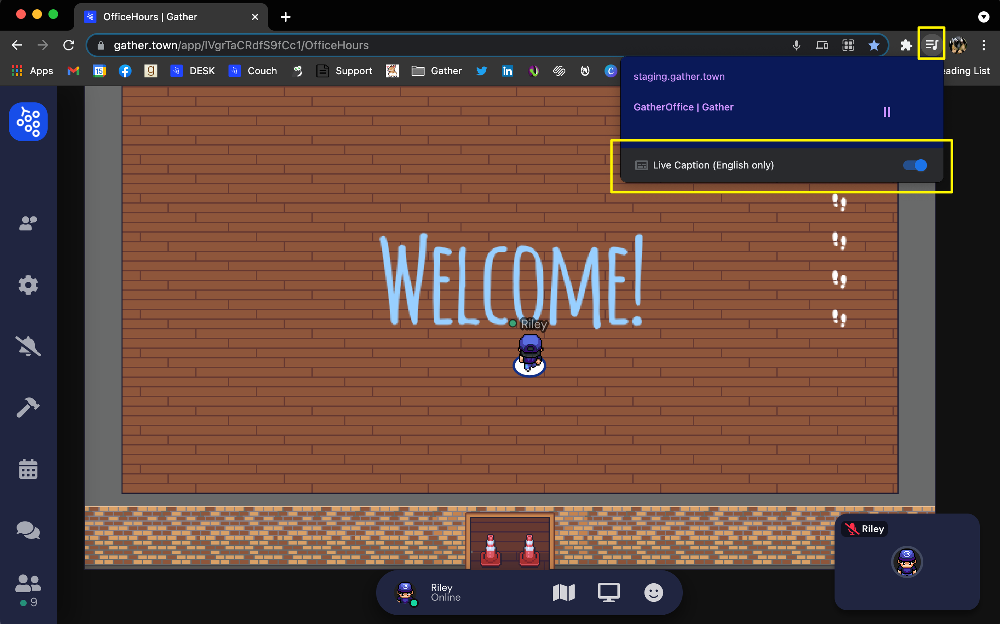

Social Changemakers Conference Series
Welcome Social Changemakers!
We are so excited to come together March 4-5, 2022. If you have any questions or issues accessing the sessions email info@oneia.ca or text 416-669-2051. The event will be held on zoom. Links for the sessions will be emailed to attendees 24 hours in advance. ASL and live transcription in English and French will be provided.
Optional networking with games, an escape room and scavenger hunt will take place after both sessions and for one hour befor on Mar. 5th on gather.town. Link to the space will be sent 24 hours in advance, but will only be open at certain times.
If you would like to see captions on gather.town you will need to use Google Chrome, see more details at the bottom of this page for to set this up.
-Social Changemakers Conference Schedule
The Social Changemakers Conference Series will be delivered completely online to avoid any financial, geographic, medical, or accessibility barriers that participants may face. The Emerging Leaders (ages 18-24) will design the contents of the conference, but the general topics include how to progress diversity, equity, and inclusion in communities. The Youth Conference portion will bring together student teams (aged 14-18) to learn how to identify issues and take actions to create positive change in their schools and communities.
Friday, March 4
| Time | Activity |
|---|---|
| Fri, Mar 4 3:00 PST 6:00 EST 7:00 AST 7:30 NST |
Welcome and Kick-off with Guest Speaker Thomas Reid, speaker and podcaster from Reid My Mind |
| 4:00 PST 7:00 EST 8:00 AST 8:30 NST |
Small Group Breakouts - change zoom rooms |
| 5:00 PST 8:00 EST 9:00 AST 9:30 NST |
Optional: Networking and Games on gather.town |
Saturday, March 5
| Time | Activity |
|---|---|
| Sat, Mar 5 8:30 PST 11:30 EST 12:30 AST 1:00 NST |
Optional: ASL Basics Workshop (one hour session) |
| 9:00 PST 12:00 EST 1:00 AST 1:30 NST |
Optional: Netwrking and games on gather.town |
| 10:00 PST 1:00 EST 2:00 AST 2:30 NST |
Introduction for the Day and Guest Speaker Sage Lacerte, Youth Ambassador for the Moose Hide Campaign |
| 10:40 PST 1:40 EST 2:40 AST 1:10 NST |
Small Group Breakouts - same zoom link as previous day
|
| 12:00 PST 3:00 EST 4:00 AST 4:30 NST |
Break - Yoga and meditation in main room |
| 12:15 PST 3:15 EST 4:15 AST 4:45 NST |
Conference Closing, Special Performance & Prizes |
| 12:45 PST 3:45 EST 4:45 AST 5:15 NST |
Optional networking and games on gather.town - room will stay open for one hour |
Sunday, March 6
| Time | Activity |
|---|---|
| Sun. Mar. 6 3:00 PST 6:00 EST 7:00 AST 7:30 NST |
Optional: Virtual Tour of the Mohawk Residential School Please note content in this workshop may be triggering for some participants. |
Note that there will be another optional virtual workshop on 2SLGBTQ+ youth and poverty held at a future date in March. Details will be emailed once available.
Follow-up
After the conference we will send weekly emails taking the youth and student teams through the 3Rs of Social Change. Each week you will receive an email with icebreakers, a video to watch and additional resources to support you in planning and delivering an initiative addressing an issue you see in your school or community.
We'll be hosting a follow-up session and celebration to discuss this very important work, any progress, challenges and next steps at the March 25th event.
Friday, March 25
| Time | Activity |
|---|---|
| Fri, Mar 25 3:00 PST 6:00 EST 7:00 AST 7:30 NST |
Celebration & Wrap-Up with Special Performance |
Setting up captions in gather.town.
The latest Chrome update now natively supports live captioning of audio streams, which WebRTC connects to automatically, so you can have live captioning for other people's audio in Gather! In the top right of your Chrome navigation menu, click the three lines next to the musical note. A pop-up window shows the name of the site. At the bottom of the pop-up, a toggle switch can be turned on to enable Live Captioning (in English only).
For more information
Email info@harmony.ca, call or text 416-669-2051.
Thanks to our Event Supporters: